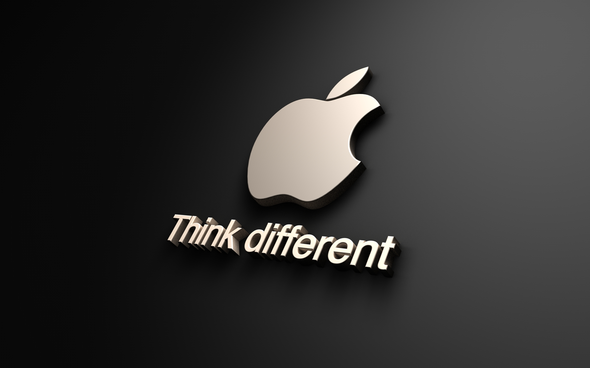

APPLE E LA SUA STRATEGIA AZIENDALE
L'azienda è nata con il nome di "Apple Computer", nota negli anni '80 e '90 per la produzione di Macintosh, nonostante avesse un brand forte, tassi di crecita rapidi e profitti elevati, nel 1996 arrivò sull'orlo della bancarotta.
Negli anni successivi Steve Jobs attuò la strategia di cambiare denominazione all'azione in "Apple Inc." con una varietà di prodotto innovativi e diversi dai personal computer, così che nel 2012 Apple diventa l'impresa con la più elevata capitalizzazione al mondo.
Secondo la strategia di Jobs è inutile fare ricorso alle strategie di mercato, poichè il consumatore non sa cosa desidera finchè non gli viene mostrato.
Come brand di culto, Apple non voleva solo vendere i prodotti, ma anche promuovere la fedeltà dei clienti. Attraverso campagne di marketing milionarie, come "Think different", Apple si proponeva come alternativa "alla moda" rispetto alle altre marche di computer.
PUNTI STRATEGICI

I suoi prodotti erano pubblicizzati ovunque, persino in riviste non specilizzate nel suo ambito.
Le principali strategie attua da Apple per la fidelizzazione dei clienti sono le seguenti:
- Soluzioni complete, i prodotti Apple sono complementari e si completano a vicenda. il controllo sull'intero processo di consumo, dell'hardware al software, aumenta la fiducia del consumatore, rendendo più semplice trovare la soluzione che risponde ai suoi bisogni
- Forte identificazione con un prodotto giovane, aggiornato e intelligente: il Mac si differenzia per queste caratteristiche dal personal computer tradizionale, che appare invece come rigido e noioso. Una volta passato a Mac, ⪢ difficle per il consumatore tornare indietro.
- Varietà di prodotti, molti consumatori potrebbero non essere pronti ad acquistare un computer Apple, ma sono disposti a provare un iPod o un Iphone. vendendo prodotti con un costo di accesso più basso, Apple crea opportunità per avvicinare nuovi consumatori al proprio mondo. Se questi sono soddisfatti, è più probabile che aquistino un computer Apple in futuro.
- Formato "proprietario", i prodotti Apple non sono compatibili per l'uso con altri sistemi.
- Diffusione nelle scuole e nelle universita (negli Stati Uniti): se gli studenti utilizzano prodotti Apple nelle scuole, imparano a conoscere l'intefaccia e ad apprezzare la performance superiore. In questo modo, Apple può catturare consumatori prima ancora che essi si accorgano di esserlo.
- Prodotti che rispondono ai bisogni: nonostante le affermazioni di Jobs sull'inutilità delle ricerche di mercato, Apple ha sempre realizzato sondaggi e analisi sulla soddisfazione dei consumatori circa la qualità dei prodotti, tangibili e intagibili, così come dei servizi ad essi collegati. Questa pianificazione meticolosa contribuisce a determinare alti tassi di soddisfazione dei clienti Apple. Prodotti robusti e facili da usare non solo soddisfano il consumatore, ma lo spingeranno a comprare altri prodotti di quell'azienda in futuro.
- Coerenza, tutti i prodotti Apple hanno la stessa architettura di base, perciò i consumatori che già possengono un prodotto Apple sanno cosa aspettarsi. Essi sanno che sarà più facile per loro adattarsi al nuovo hardware e questo li renderà più propensi a un acquisto ripetuto.
- Varietà di utilizzo: anche se l'architettura di base rimane costante, i prodotti Apple consentono una varietà di utilizzi in contesti diversi: quello professionale, quello educativo, quello del tempo libero e dell'intrattenimento.
- Studio delle soluzioni migliori: tutti i prodotti Apple, e gli accessori ad essi collegati, sono il risultato di un'attenzione molto particolare al design, ai colori e alle forme.
PUBBLICITA' COMPARATIVA
Un'altra strategia usata da Apple Inc. è stata quella di utilizzare la pubblicità comparativa, operazione messa in atta dal 2006 al 2009.
Questa pubblicità aveva il nome di "PC VS MAC" metteva a confronto due persone, una era goffa e in ogni spot aveva un problema e rispecchiava un semplice pc, in quei anni evidenziava soprattutto il pc Windows facendo notare l'eterna rivalità tra la Mela e l'azienda di Bill Gates, la seconda persona giovane e vivace rappresentava un pc Mac sempre aggiornato e rispecchiante i bisogni dei consumatori.
Questi spot non vennero girati in Italia per la regolamentazione sulla pubblicità comparativa, in quanto è vietata e pesantemente sanzionata quella denigratoria che mira a risaltare le qualità di un prodotto citando i difetti un altro.
Pertanto, il confronto diretto è vietato in modo assoluto, mentre il confronto indiretto è possibile solo se serve ad evidenziare gli aspetti di novità di un certo prodotto rispetto a tutti gli altri prodotti del settore e non ad uno in particolare.